Weird Era Adventure
I split it into 2 pages because it wouldn't let me add another thing, I later realised that it was because I forgot to close a div tag, but it's too late now.
-
Final Advisory 03/06/2022:The class plays fishbowl. Everyone writes something in a strand of paper(It must be something everyone knows about) and all of the papers are double folded and put in a bowl. Groups are made, one person from each group must read the paper and say anything except the words in the paper, the rest of the group has to guess what the paper says.
An amazing end to the advisory journey, I am glad that the group did not discuss anything serious this time. The game was a perfect ending because most of the words or phrases where references to the past events of weird era. Here are the references I remember.(The parenthesis is the word in the papre "Word or phrase in paper")
- Angies dog... "Koda"
- A pretty good question "Is there life after death"
- The movie "Morbius"
- Angie's mispronounciation of the movie morbius "Morbend"
- Bruno's instagram account "Done and Dusted"
- Martinas name "Martina"
- Martinas name again "Martina"
- Words that Fede uses often "Slay", "Girlboss", "yass"
- Lucas Fiandra's nickname "Mono"
- Timo aquiring the title of lord "Lord Timoteo"
- Alex's favourite drink, and mine too "Chocolate Milk"
- Physics teacher "Mr Williams"
- The study of... like everything I guess "Physics"
- What happens when you don't eat "Hunger"
- A reference to how this is the was the last advisory "Last Time"
- "Get a taste from youre own medicine"
- A reference to how school is almost over "The end is near"
-
Fishing
05.06.2022 Megan and TimoThe Table Tube Gang wants to go fishing. But they need to wake up really early in the morning so almost none of them go except Megan, Timo and Alex.
Timo arrived at Megan's house and went to piriapolis. They meet with Alex and his family, Alex is with someone named Emiliano
Everyone went fishing. Timo had glass, and a man on the boat told Timo that fishermen with gloves never catch fish. Timo then getting 3 fishes in 7 minutes, however he stopped after the third fish because he started feeling bad for the fishies. Instead he tried giving his luck to Alex who was struggling to get one fish..

Timo and his victim
Megan did not want to catch a fish but was still pretending to try, eventually she just stopped trying and sat down besides Alex and Timo. Someone named Elena was there aswell. At some point Megan attempted to scare the fishes away so that Alex wouldn't be able to catch them.
Lightning events- Timo informs Alex of THE JOKE with indirect clues
- Alex tries to figure out the joke.
- Megan is informed of THE JOKE. Timo and Sebas had made a good job in ensuring that everyone spreads the myth that Sebas is good at ping pong. So much so that Megan believed it aswell.
- Timo analyses Alex's breakup song
- Alex is tasked with analysing Timo's breakup song
- Alex got 3 fishes over the course of 1 hour and 30 minutes
- Alex tries to figure out THE JOKE, claiming he is the ultimate detective.
- They talk about anime
- Timo tells them that he found an abandoned neighbourhood
After that they go to another fishing spot, where they talk a bit more.
Then they ate at a resaurant where Timo expains how he saw bones in an abandoned neighborhood. Then they ate ice-cream, Megan suggested for everyone to go visit the abandoned neighborhood place.
Come-backTimo and Megan slept in the ride home, They woke up and Timo showed Megan the abandoned neighborhood. Also Timo told Megan about this website right here. This made Megan want to stay in UAS since she could appear in the story more. Then Timo fell asleep and Megan took this picture

Timo in the dream world
Alex went home too I suppose
-
The ping pong paddles and balls where not that good, so they were replaced with better ones.
-
The End of Weird Era Approaches
So now the review days come, these are the days where people review stuff.
-
06/06/2022:Many people are sick and did not come to school.
People who came this day- Marina
- Megan
- Timo
- Fede
- Lupinacci
- Mati
- Alex
- Lucas
- Bruno
- Daniel
- Josh
Marina and Timo are the only ones in the class. Timo told Marina about the fishing. They did a virtual lab while Mr Williams talked about a sport called rounders, which was like baseball but more fun, aswell as medical problems like needles and diseases.
ChemistryThe class did an experiment where they took Hydrochloric acid and combined it with sodium carbonate. They had to find the theoretical mass of the carbon dioxide produced by the reaction and then compare it to experimental mass. Some got it good some didn't.
RecessSome played ping pong, some where just talking or doing other stuff
EnglishThe two classes reviewd for the exam final and Timo wasted Alex's time. Mili arrived
Computer SciencesIt was in the library because of MAP testing and only three people where present, Timo, Mili, and ALex. They worked on coding. Timo and Alex played chess, and Timo destroyed Alex twice
LunchTimo and Alex played some ping pong as well.
Fede and Megan where going around the school talking. The rest of the people where talking in a table in the cafeteria.
Timo joined the cafeteria people and told Marina about his plan to share with everyone a collaborative document with docs for physics in IB, Marina told Timo that there was a chance she would leave before going to IB. This was the moment Timo realised his might be correct
MathIn core math the class just worked on khan academy while talking about iced coffee vs coffee and other coffee related things. There was only Lucas, Mati, Timo, and Marina.
Megan bought prom tickets for Sebas and Timo, the prom tickets look really cool but I lost mine and I forgot to take a picture.

I lost mine
-
07/06/2022:This time everyone is sick too
Those who came- Martina (sick)
- Milagros (sick)
- Lucas (sick)
- Timoteo (sick)
- Bruno (sick)
- Santina
- Matias
- Lupinacci (sick)
- Daniel
Timo arrives, then Daniel, and eventually spanish starts. The class identifies literary devices in spanish class
Dani and Martina have an intense argument over the letters J and G and their pronounciation.
BreakDani got vaccinated in his right arm, so now he plays with his left arm, he thinks it looks cooler to paly with his left, and now he wants to play with his left forever, Timo destroyed him though. Lupi played ping pong with Mati. Martina and Mili where walking around talking.
UP HistoryDaniel was looking at the math hl syllabus in UP history, and he tried to grasp some mathematical concepts, he was worried about the IB and college, he asked Karina(the teacher) how studying in college was like, she said she was the kind of person who studied a lot. Meanwhile Timo found a way to edit a text file by replacing it then renaming it again, he was really proud of his accomplishments. Also Lucas left for phisiotherapy and Milagros just left for no given reason
US HistoryThe class played ping pong with 2 desks in history. After that Eveyone just worked on stuff or did nothing. They were all sending gifs through the discord. Timo left history, said hi to Alex and Megan who were in lunch, and then came back to the class.
LunchDaniel played ping pong with Timo, he liked playing with his left hand, he wants to become a left handed player. After that Timo joined Lupi, Matias and Martina who where talking about prom invitations. Matias and Lupi totally wanted to go together to prom but none of them had the courage to ask each other out, both where trying to get the other to ask. They tried to make Timo invite Mili, but Timo did not want to. Then everyone tried making Martina invite Dani, but she didn't want to.
PEMore than half of the class was missing so Jeff decided to let everyone study or workout. In the library, Timo told Dani that Josh was thinking of inviting Marina to prom, Dani said that there was no way she would say yes, but Timo disagreed. Dani went on a tanjent about how Josh did not rank high in the "attractivness scale" and he proceeded to show Timo the aforementioned attractivness scale, which was actually a tierlist. Timo thought that attractivness is relative and putting beauty on a scale was preposterous. Bruno agreed with Timo, but then Bruno started saying stuff that no one understood. Dani started arguing with Bruno about the importance of looks, the meaning of the word "perfect", and the meaning of the word "normal". Timo found the discussion too intense to participate in, so he talked a bit with Lucas. Bruno believed that the words "normal" and "perfect", should not exist, I don't really know what he meant by that. Dani left because he got tired, Lucas and Timo followed, leaving Bruno alone. After that some played volleyball, some worked out, some went to sleep.
Meanwhile there were people in the gym talking and training
After thatTimo, Alex, and Lupi played ping pong, very evenly matched between all three players.
VolleyballTimo was very tired, so his surfs where weird, this weird surfs lead him and Luca taccone to win a game against the volleyball teacher, lupi, and Alex
-
08/06/2022
- Martina (left)
- Milagros (sick)
- Lucas (sick)
- Timoteo (sick)
- Bruno (sick)
- Santina
- Matias
- Lupinacci (sick)
- Daniel
- Milla
- Ethan
- Bruno
In physics people continued the lab they where working on a force, mass, and acceleration lab. In physics Milla tells Mr Williams that vikings didn't invade finland because they had wizards, or at least that's what Milla learned while she was in finland.
BreakDani continues to practice with his left hand in ping pong, he says that he is going to practice for all break in a ping pong table that he has in spain. He has improve since the last time, like at least he can hit the ball back 75% of the time.
EnglishPeople where just studying, coyle was absent and thus Andrea took over. Martina was sat in a corner of the room and she was absolutely suffering because she was sick. Martina's infirmity was so great that it caught Andrea's attention, Martina went back home.
Computer ScienceAlex played Timo in chess, however Timo underestimated Alex and for the first time, Timo didn't win against Alex in chess, it was a tie. Then Timo played another game in which Alex got destroyed. Alex then said that he would beat Timo in ping pong during lunch.
LunchAlex prepared to play ping pong, saying "you might be better at chess but I'll destroy you in ping pong". Alex then proceeds to lose 11-2 which is his worst loss yet. However it's fitting since his favourite number is apparently 2.
MathMr.Zarzky gave everyone time to study, Orrico came to survey the class on who was taking Math Analysis and Approaches (AA) in the IB. Everyone who was taking Math AA just happened to not be there.
-
The table tube gang was summoned to fede's house, Sebas played "frame it" against Sebas while Milla and Megan just watched, then Megan played chackers against Timo who wanted to play chess
After that, a play happened, where Nata was one of the actresses, the play was about how women are treated in society, not very well turns out. Timo, Marina, Mili, Angie, San and Mati where there.
-
09/06/2022
Those who came- Daniel
- Lucas
- Ethan
- Matias
- Megan
- Milla
- Ethan
- Sebas
- Nicole
- Timo
- Alex
- Santino
- Bruno
- Fede
- San
- Lupinacci
After Timo, Lupi, and Nicole finished their spanish act. The class played review games. Reviewing literary device and such
BreakDani wanted to play ping pong, and so he did, while the Table tube gang was outside talking, and Timo just in the music room getting ready to play while josh was just there. Nicole and Mati where in lunch talking with someone.
Spanish LLMegan and Alex played intense checkers. Alex didn't do that well in chess so now he was trying his luck with checkers.
UP HistoryEveryone worked in the UP presentation while they planned a second merienda, after that the class of 2022 officially gradutated. So now this class became the juniors.
US HistoryPresentations, everyone did presentations about the essential questions of TCI. Then they worked on stuff.
Physical EducationThe class ran the mile, however some people where missing, and further more, everyone was sick, specially Timo and Bruno. Bruno got to run 3 laps and a half while Timo was dying from exhaustion. Jeff gave him a good grade for effort though. After that, the class chilled in the weight room, while Timo slept.
ArtMilla, Megan, and Alex had to walk outside for an art presentation
> -
10/06/2022
Spanish
Before the class starts, Nicole tells the story of her nightmare
She was in a dark forest with her friends, a group of like 7, and she suddenly saw a white wooden house. She pointed her flashlight at a tree and saw a hanging body, then she started noticing that there where many hanging bodies around, and so she told her friends to run before they got hanged themselves. But something grabbed Nicole, and so her friends left her while she was doomed, but then she entered the house, and something comes in, and then the dream ends
Santion, Dani, and Luca prepared their act while the class reviews.
After the incredible act(featuring San with a wig and Bruno with sound effects) the class did a practice final exam for the spanish class spanish. Marina reveals that she is going to leave and she will not be doing the IB in UAS. So she won't be joining the UAS Class of 2024 in the next chapter.
ConcertThere was a concert, the music classes played many songs, among them they played Wonderwall, In the army now, Paradidle, an more. There where many guest musicians like Josh and Timo. In the break, a middle school band consisting of paula, riho, nico, mileys, and maybe someone else, played 3 songs, one of them was "locked out of heaven".
UP HistoryEveryone ate things like oreas, or magdalenas, and crumble, while working on the final project. Santino and Nicole where constantly fighting, Timo finally worked on the final project and Daniel was stressed while Luca, San, and Mati discussed about siblings, specifically Luca's cousing for some reason. Nicole was also Stressed.
US HistorySome people took the final in this class, but others where exempt since they got A's, those who where exempt worked on an experimental science lab.
LunchNormal lunch, except for this day, ping pong tables where taken away, and thus ping pong was not palyable. The ping pong tables were taken because of prom preparations.
PE/ARTThe gym was occupied due to the graduation and also the prom, and thus the class was free to do anything. San and Lupi played video games, girls went to the lockeroom to talk, Timo realised his phone was missing and went in an adventure of self discovery to find it.
PEThe Gym is being used for prom, so people just play video games, watch movies, and talk to Jeff, however Timo did something a little bit different.
Timo was supposed to go to PE, but they weren't doing anything because the gym was being used for PROM. So he decided to go find his phone, first he went to the music room where he tried to find Mr Baranzano, since Timo though he might have forgot it while the concert was going, he failed to find him though, after that he went to the spanish class, but ran into the art class. Alex was working really hard on his final and fede advised Timo not to distract him. Megan helped Sebas finish his project. Megan, Timo, and Sebas where talking when Megan told Timo to sign her goodbye frisbee, Sebas did not want Timo to sign it, since that would seal Megans fate of leaving Uruguay, Timo agreed with Sebas' reasoning. After that Megan gave Timo his prom ticket.
Then the art class started their presentations. After Sebas and Fede finished presenting, Timo remembered that he was not supposed to be there and he went back to PE. Everyone in PE was wondering where the hell he had gone. Timo told them his story.
Jeff told him to go look for Mr Baranzano again so he can find his phone, and so he did. He failed to find him. He also went to search in Foege's classroom and every single classroom he had been on, but still he could not find it. However, he found Megan's jester hat in Foege's class, and he realised something huge. Timo went back to Jeff, and Jeff bet 10 dollars that Timo's phone was on his back pack. It was not
Timo then went to the art class and gave Megan the Jester hat, and he also signed the goodbye frisbee. Everyone left a little note in the frisbee, Timo's note said "There are cool things". Sebas did not like this because this symbolically shows that Megan's fate is now sealed and she will be leaving to the US. Timo found his phone 2 minutes after that, it wasn't on his back pack, it was on his case :)
-
Prom 11/06/2022
So Fede asked Alex to go to prom with him, this was as a joke, except that everyone knows that Fede is gay. It's not confirmed, he hasn't anounced it, but everybody pretty much knows. Alex said yes to continue the joke but it was kind of awkward for him.
At the entrance of the school, you could see a wallpaper to take photos, aswell as guards, then there where stars in the floor with the names of the seniors, aswell as powerful stage lights illuminating the hallways.

The entrance to the prom dance area
The party was in the gym, in the center of the gym there was industrial piping holding lights and speakers. Surrounding the center where some tables, a popcorn stand, and a place for smoothies
So the TTG is summoned to the house of Megan, they all talk there for a while. Timo has the normal green mug which he plans to give to Martina since it's her birthday tomorrow (after 0:00 when prom ends). Fede paints his nails, and everyone is wearing quite elegant clothing.
Timo thinks of painting his nails, but he decides not to after seeing that the nail paint contains trace amounts of lead.
Then they take some pictures
.jpg)
.jpg)

Pictures they take
Then they go to the prom. Megan forgot her ticket but luckily she had digital evidence of the ticket. So people were like dancing and stuff much like any normal prom. Milla and Timo don't like the loud music though.

Prom picture
Juan and Coti were anounced prom king and queen, however Coti wasn't present so Bruno Taccone took the badge and crown instead. Sebas, Alex, and Fede dance in the dance floor while Milla goes to the second floor of the school where there is no music and it's more peaceful. The TTG starts looking for her. Milla finds Timo and they all go to the second floor where everything is more quiet.
.jpg)
Point of View of Milla and Timo from the second floor
Then the rest of the TTG finds them and they go to get something at the lockers. Here are some pictures of everyone at the moment.
.jpg)
.jpg)
.jpg)
.jpg)
.jpg)
.jpg)
.jpg)
.jpg)
They got to get something
Also Lupi was sleeping in the prom I don't know why. Eventually Milla and Timo go down and they encounter Angie, Chiara, Salma, and Martina among others. Timo checks the time and gives Martina the Normal Green Mug as a birthday gift since it's 0:00 (he has been carrying it in his hand all this time). Martina liked it since she like drinking tea.

Lupinacci taking a little nap
Milla, Timo, and all the girls then go back to the gym, where the event was hosted. Timo and Milla immediately retreat because the music didn't get any less loud (it got louder)
Eventually prom ends, the TTG goes to the theatre where a piano can be found. Timo plays the piano and Milla forshadows that she will learn how to play the piano some day. Then everyone goes to their homes, except those who go to the after prom. But I don't know what happened there.
.jpg)
.jpg)
Them at the theatre
Other things- Natasia was there
- All teachers where also there
- Valeria was there
-
Final review day
The physics class learned one last thing, they learned that they are already behind for IB, since they could not finish forces
Award ceremonyThe awards where given, many awards, too many for me to remember.
EnglishEveryone reviewed for the final, trying to find the difference between post hoc and false cause (no one was capable). Someone said that post hoc uses the fact that the event happened in the past as innadecuate evidence to support a claim, while false cause uses the fact that both events happened to say that there is a correlation.
LunchLunch was weird, so every class was having lunch at the same time, in lunch, Marina had a frisbee which everyone could sign, and many people signed it with innapropiate jokes.
Computer ScienceEveryone finished their final project
MathEveryone reviewed for the final
-
14/06/2022
In computer sciences, the class had to write 3 programs each one doing a different thing
Experimental class worked on their final project
Math was simply a math test
-
15/06/2022
There was no school this day, some studied
Also Martina uses the Green Mug.

Green Mug in use
-
16/06/2022
The spanish class did an exam and had to write a prompt about a literary essay about the definition of art
In break, many practiced for presentations of UP History
In UP History many people presented about different types of populism, a movement based around the leader of the country being popular with the majority of the country.
-
17/06/2022
The physics and the english exam happened. The TTG delivered a paper to williams, the papers had a picture with mr williams playing a fake guitar in a funny pose, along with some of the most iconic Mr.Williams quotes
Its not rocket science guys (in bri’ish)
Benton 10 (10 times repeated while class in confusion)
Sebastian. You. Are. USeless. (Audio pinned in whatsapp)
Fede is useless. (Data in email)
Judging Glare looking down with eyes up
Ethan next time i want your homework in English not hieroglyphics
You should bully yourself and flush your head down the toilet
Why would i give YOU hydrochloric acid (Stares at Timo with disgust)
You should bang your head on the table (To mati)
You are a sassy little girl today aren't you? (To Fede)
Im very dissapointed in all of you, especially YOU (To Ethan)
In any assessment if you ask any questions your grade will be lowered
I will be watching you like a hawk
I don't make mistakes because im not human
You were in my experimental class, I am gonna drop kick you
- Lucas: I want to leave
- Williams: bye felicia
“It's not that you didn't know, it's that you forgot”
"I got a call from my alarm" (Matias) Is that because your alarm is your only friend?(Williams)
Also the yearbooks where given out
-
Table Tube Gang official goodbye party
June 17 2022The table tube gang was summoned to the original Rudy, the one in Montevideo shopping, to say goodbye to Megan and Milla who will be leaving and won't be in the school for the next chapter. All of the Table Tube Gang showed up except Josh but no one really knows where he is.
The group went to Rudy, but Timo went to the arocena Rudy instead of the pocitos one so he arrived late. Alex asked through the Table Tube Gang groupchat what burger Timo wanted. He wanted a well done burger with everything, and Milla decides what fries he'd get, but Fede asked for a "Jugosa" instead for some reason (I don't know what point of the meat that is in english but it's not well done.)
They talked about many, mainly reflecting on this year. Also, they sing happy birthday to Alex again (It's not his birthday).

Alex analysing while seba stares while fede talks

Megan and Milla, plus alex secretely analysing.

The TTG in a moment of depression, look closely, and realize how everyone in this picture looks sad.
The group was going to go to Milla's house, but she was hiding something and didn't want anyone going there yet. Sebass and Alex went to their home's while Timo, Megan, Milla, and Fede where figuring out what to do in the street. Alex lives close to Montevideo shopping so he could just go there walking.
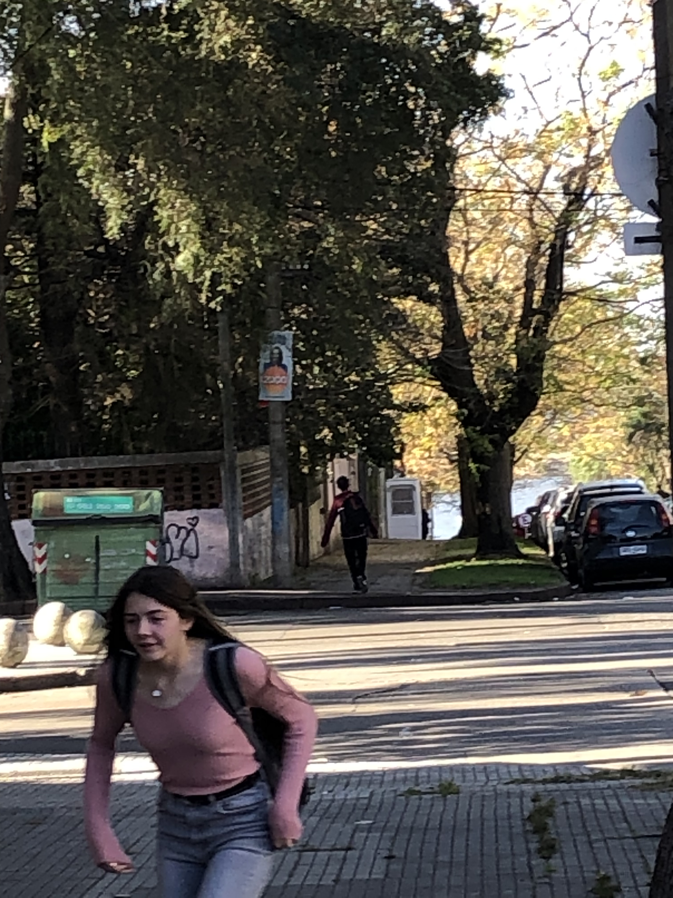Alex leaving
They ended up going to the mall where they bought Milla a parting gift, some sticker tape. Then they ate McFlurry's while Timo hired Alex the detective to figure out what Milla was hiding in her house. After that they all left.
 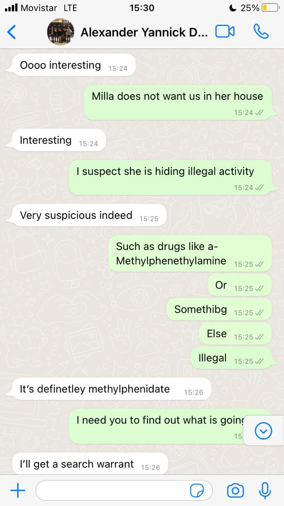
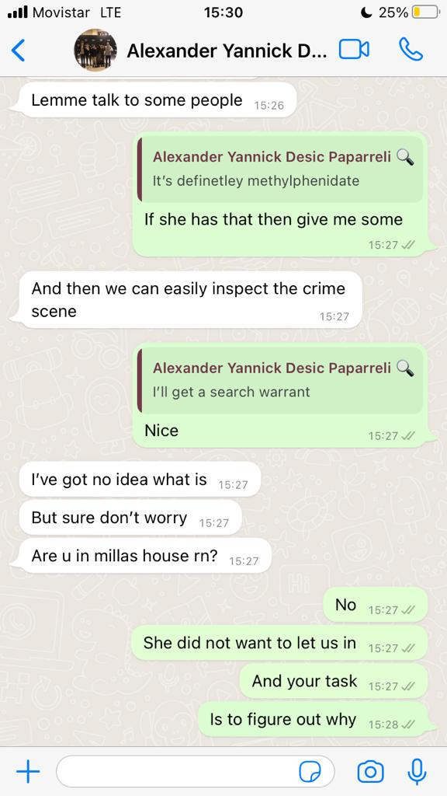
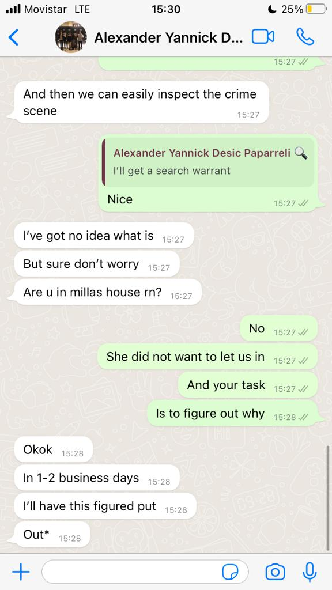
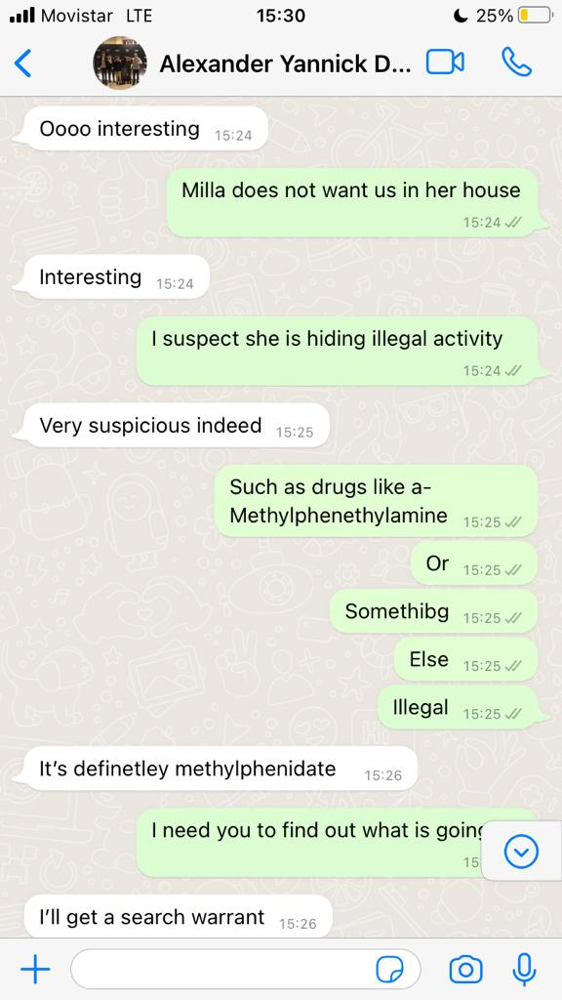
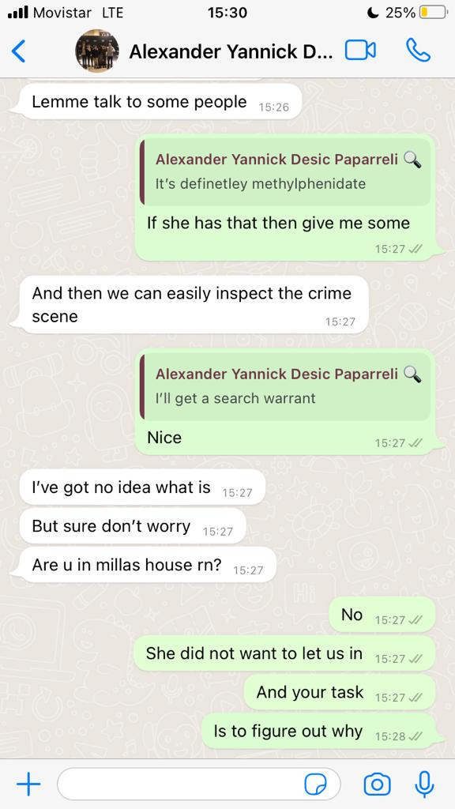
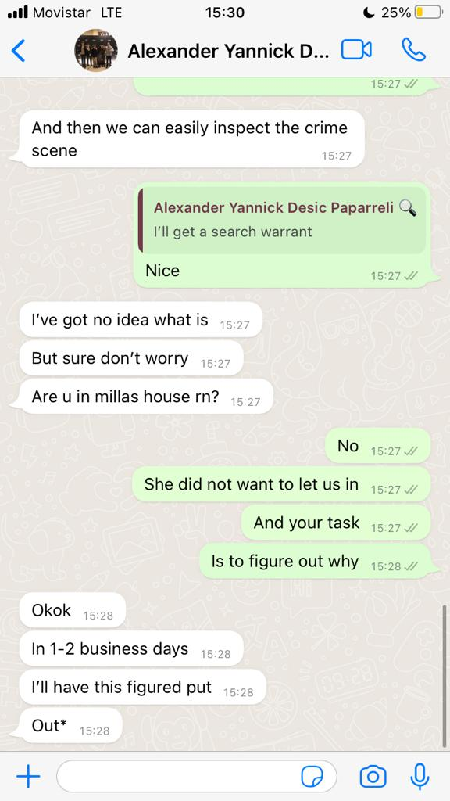
Alex
Megan later reveals that she somehow stole The Tube from Joshua's locker, which will lead the group to change the name of the group.
-
Party at Fede's
Fede Birembaum hosted a high school party, the kind where people just drink, talk, and listen to really loud music for like 3 hours.
Those who came- Lupi
- Timo
- Marina
- Zalma
- Martina
- Valeria
- Luca
- Santino
- Nicole
- Matias
- Chiara
Everyone just danced and talked, Lupi and Timo ocassionally sat down to have a break from the party. They talked about how they only come to the party in case something interesting happens.
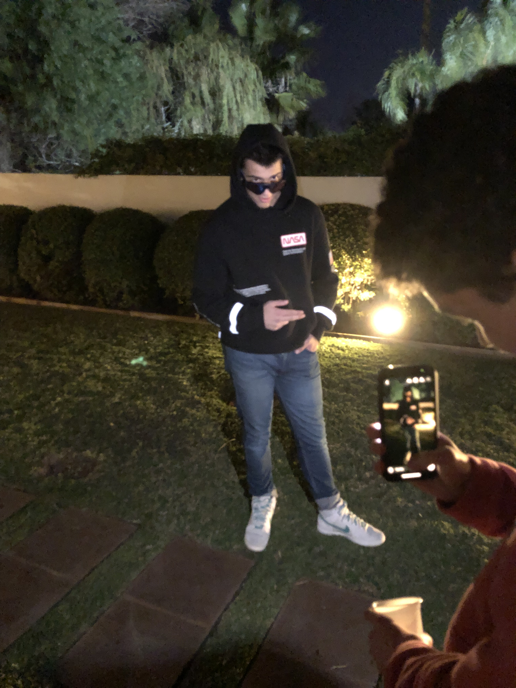San
After that someone decided to jump in the pool, depite the temperture not being ideal. Timo told Lupi that they gor their special "event" but Lupi said that the whole party was just and event. But Timo said that events can be inside events, he called them "Microevents"
I am sure you can see what's going on
The microevents/ flash of eventsMissionaries where in the party and they recognised Timo as the flute guy
Martina thanked Timo for the Special Normal Mug
Many people where about to get kicked out of the party because they were not from the UAS(including the missionaries) but they let them in at the end
Timo and Lupi sat down and chilled for a bit
Martina made out with someone
Sophia Marquezz went for a swim in the pool... fully clothed... (temperture was like 6 degrees celsius)
Lupi commented on how he would actually go in the pool if it wasn't for the fact that he was not at home, so he does not have towels and he can't get in a car while he is wet.
Everyone surrounded Lupi who was sitting outside with Timo, they formed a circle around him, excluding Timo. They where worried because Lupi was chilling, and Lupi never chills. But Lupi just wanted to chill and no one let him. Chiara and Martina insisted for Lupi to kiss Mati while Mati was trying to get him to dance
One of the christian missionaries talked to Marina and Chiara about the lgbtq community. The girls told him they where asexuals and that Mati and Lupi where gay.
Santino talked to the missionary people
Everyone left Lupi alone finally
-
The final finals + cata's party 20/06/2022
The last day of school, some had to finish finals and so they came to finish them. Timo did the english exam, San did the Math exam, Luca did the PE exam, and angie did the Computer Science exam. Timo and San finished immediately and saw each other. Then San went to visist jeff and talk with Nicole
After that Luca entered the school and saw Timo, Luca needed to finish the PE final, but jeff canceled it, so he was just stuck there. After that recess started.
Angie, San, and Luca talked while Timo played the piano and the guitar in music class.
When recess ended, Jeff told Luca and San to do an essay about sports. They went to the library and the to the computer class where San watched a movie. Meanwhile Timo talked to Joaquin Baranzano the music teacher about how the destruction of exosystems affects the soundsacpe of places.
Timo then went to Jeff to see where Luca and San were, aswell as to claim his money from the bet. Jeff didn't give him money, instead he gave Timo a piece of brownie, a chocolate, and a kitkat. Jeff and Timo talked and Jeff told Timo that San and Luca where in the library, so Timo went there, but they where in the computer class, San was watching a movie, angie was "doing" the computer science final, and Luca was playing games on his phone(doing the PE essay). Timo gave Luca and San the kitkat from Jeff. San tried to plug in two headphones so that Timo could also listen to the movie he was watching, he googled how to make 2 headphones play sound, and the answer that google gave him was "Buy a headphone splitter".
Timo challenged San to a game of ping pong, they went to ask Helen if they could, but Helen told them to wait a bit since many people hadn't finished thei exam yet. Luca and San went upstairs and walked around, while Timo went to Baranzano's class to play the guitar, Connor and Alesandro where in the class, and they wanted to play ping pong since they already finished their final, however Baranzano didn't like the idea since he didn't think the principal would let them.
Timo told them to wait until an hour of the final had passed, and then they would be allowed to play ping pong, Baranzano agreed. Timo played the Guitar while everyone else waited, and then Connor and Alesandro went to play ping pong. Luca and San saw them playing and they started to play aswell.
Timo joined them.
FINAL PING PONG MATCHES OF WEA- San was about to win but then Luca did an epic comeback
- Luca destroyed Timo
- Luca destroyed San
- Timo and Luca did an epic match to 21. Luca started off with the upper hand, but Timo started reaching him, the end was very close, Timo was about to win, but Luca won at the end
- Timo played San who was tired of losing, and San lost again
Luca was first, Timo was second, and San was third.
And after that, the final actual day is over.
Cata's party
What happenedNot very interesting party, it was pretty lame. So let's summarize it in a flash of events
- Lucas came and waited for Timo
- Lucas recieved a message that Timo forgot his money
- Lucas payed for Timo
- Lucas realised he lost his Lon Tennis card
- Lucas also realised he was really tired and was going to get bored in this party
- Lucas and Timo had a similar discussion to the one that Lupi and Timo had at fede's party, about how these parties are kinda lame unless you get high or drunk, or are very social
- Lucas realised that he was going to have no fun at this party
- Lucas and Timo went to the exit where they saw the girls coming in, including Vale
- Lucas told Timo that he would leave because the party was too lame for him, Timo understood.
- Lucas told Timo that if anyone asked where he had gone, to tell them that he forgot something and that he may come back, though he wouldn't, Timo agreed.
- Timo told him the events that happened earlier that day in the final day.
- After that Lucas left
- Timo went back, but he did not know what to do, dancing was not for him, and none of the people he would usually talk to where there, so he kinda just sat there.
- Timo was tired and couldn't breathe correctly to counter the cold as he usually does, so he got cold and was forced to go inside with the loud music.
- The rest of the people where just dancing and talking
- Towards the end, the group talked a bit about the IB. Someone from the class of 2022 who took physics HL was talking about how he regretted doing so.
- After that Timo and Mili left, as everyone continued doing what people do at parties
Also Megan confirms that she is in possesion of the Tube

The Tube in Megan's possesion
-
Makeup day
Dani and Lupi, and maybe others had to finish exams that they couldn't do because they where absent, or didn't finish them, this is the final day any one can possibly be in the UAS school.
In the review days, almost no one showed up most of the time, because of the sickness, there was sickness going around. Now here are the review days


 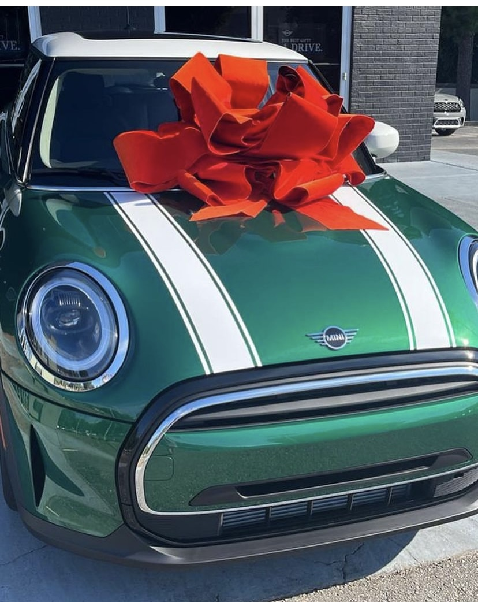
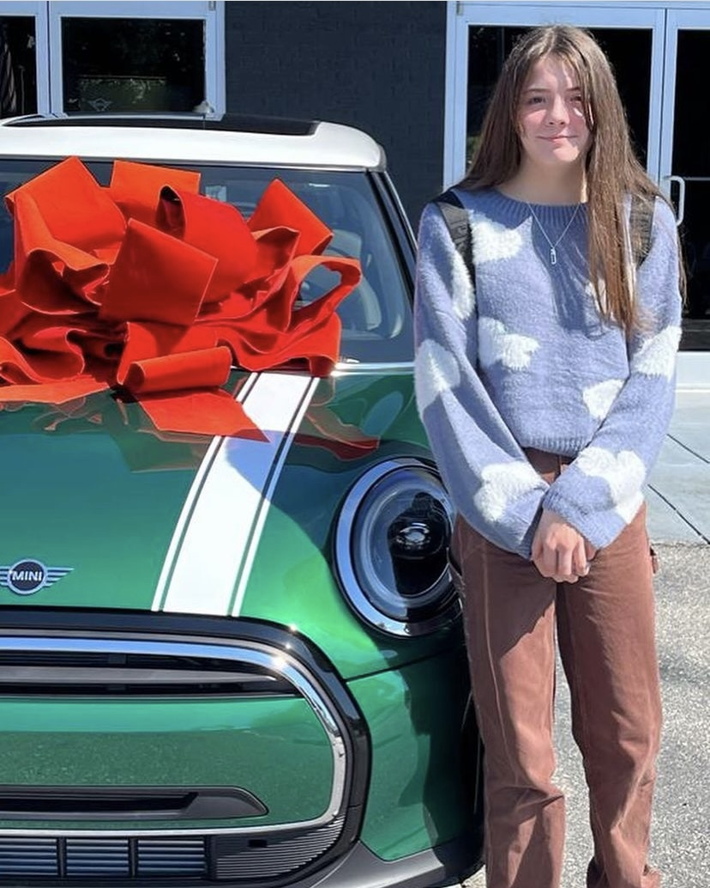
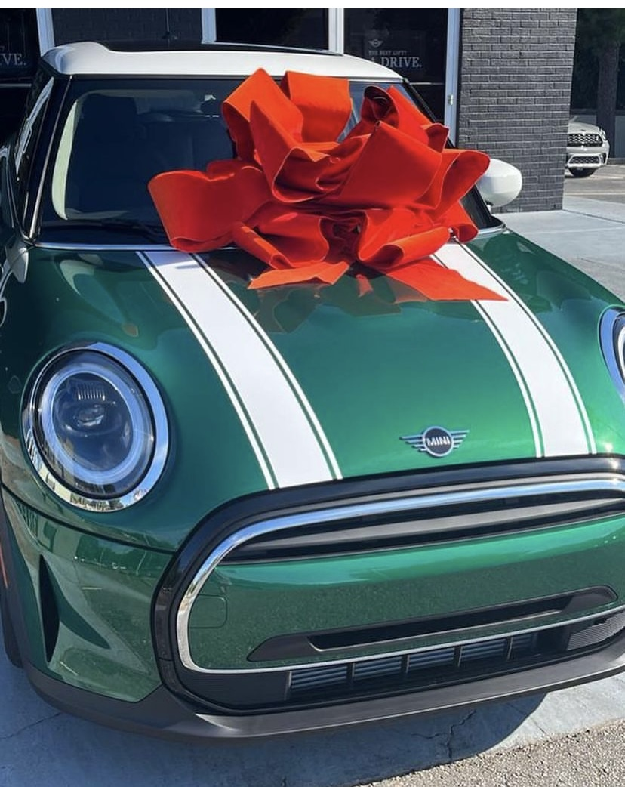
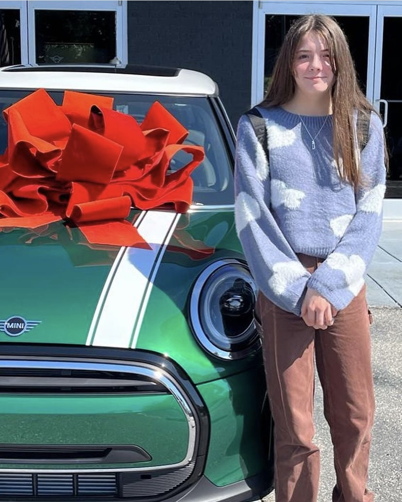

 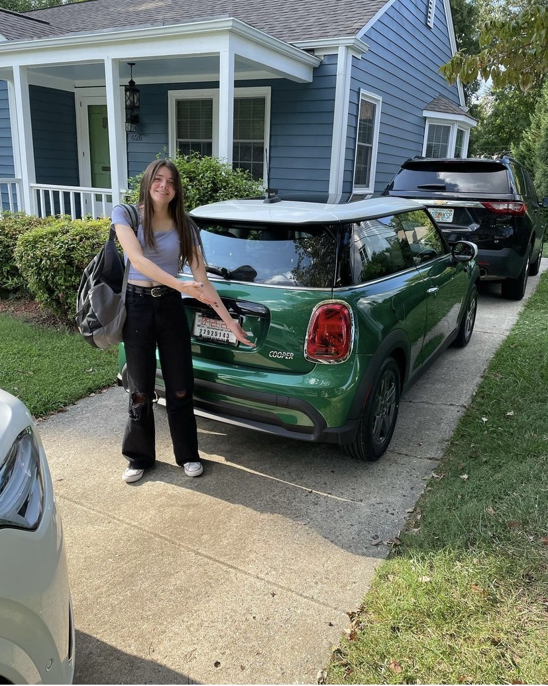
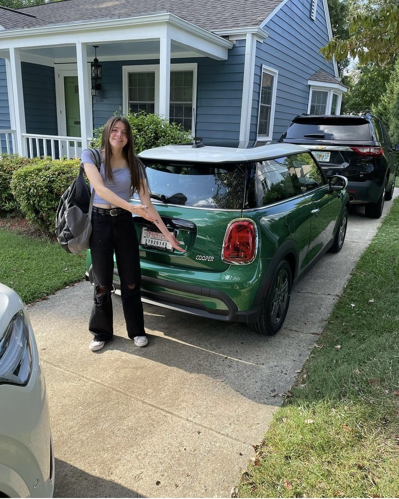


.jpg)
.jpg)